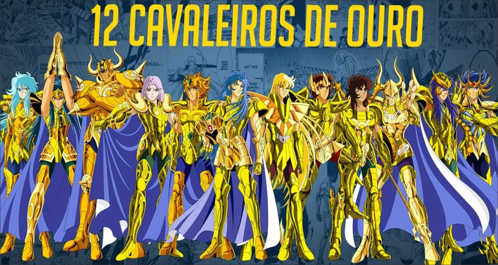
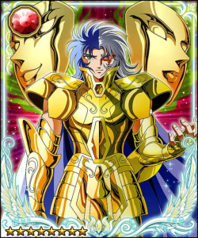

SAORI / ATENA
MU / ARIES
ALDEBARAN / TOURO

SAGA / GEMEOS
MASCARA DA MORTE
AIORIA / LEÃO
SHAKA / VIRGEM
DOHKO / LIBRA
MILO / ESCORPIÃO
AIOLOS / SAGITARIO
SHURA / CAPRICORNIO
CAMUS / AQUARIO
AFRODITE / PEIXES
pag.2/
pag.3/